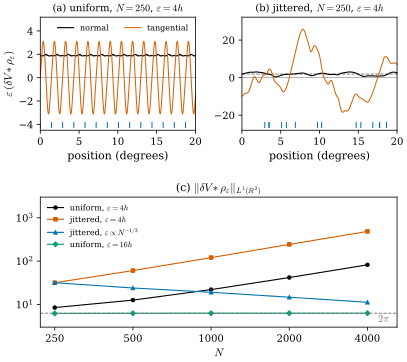

47.3 Regularized First Variation
Goals
- regularized first variation \(\delta V*\rho_\varepsilon\)을 test vector field를 흐리는 것으로 정의하고, 그것이 언제나 연속인 \(L^1\) vector field로 표현된다는 것(식 (3.4))을 유도할 수 있다.
- \(\varepsilon \to 0\)에서 \(\delta V*\rho_\varepsilon\)이 \(\delta V\)로 돌아간다는 것(Proposition 3.5)을 증명할 수 있다.
- point cloud에서 \(\norm{\delta V*\rho_\varepsilon}_{L^1}\)이 scale \(\varepsilon\)과 점 간격의 관계에 따라 bounded로 남기도 하고 터지기도 한다는 것을 수치로 설명할 수 있다.
- Theorem 3.6(compactness와 rectifiability)의 두 가정이 각각 무엇을 막는지 예로 설명할 수 있다.
Prerequisites
- Section 47.2: discrete varifold와 그 first variation의 문제(Remark 47.2.8)
- Section 46.7: convolution, smoothed first variation(Proposition 46.7.4)
- Section 46.5: Allard의 compactness theorem(Theorem 46.5.10), 밀도가 고르지 않은 curve(Example 46.5.9)
Motivation
Section 47.2는 discrete varifold의 first variation이 쓸 수 없는 대상이라는 것으로 끝났다. point cloud에서는 measure가 아니고, volumetric에서는 measure이지만 cell이 작아지면 크기가 \(1/a\)로 터진다. 그런데 고전 이론의 좋은 정리들은 first variation이 bounded라는 가정에 기대고 있다. 예를 들어 varifold의 열 \(V_i \overset{*}{\rightharpoonup} V\)에서
이면 극한 \(V\)는 locally bounded first variation을 갖는다(논문의 (3.1)). discrete varifold의 열은 이 조건을 만족하지 않는다. 그래도 \(\delta V_i\)는 \(\delta V\)로 distribution의 뜻에서 수렴한다. 그래서 논문은 \(\delta\)에 kernel \(\rho_{\varepsilon_i}\)와의 convolution을 합성하고, 그 결과의 \(L^1\) norm을 고르게 제어하자고 한다. \(\varepsilon_i\)가 scale 매개변수 역할을 한다.
Definition and Representation
convolution을 하려면 \(\Omega\) 밖까지 퍼지는 test vector field도 넣을 수 있어야 한다. 논문은 먼저 first variation을 \(\R^n\) 전체의 vector field로 넓힌다.
Definition 47.3.1 (extended first variation). \(\Omega \subset \R^n\)이 open set이고 \(V\)가 \(\Omega\) 위의 \(d\)-varifold이며 \(\norm{V}(\Omega) \lt \infty\)라 하자. \((x, S) \mapsto \divg_SX(x)\)는 bounded이고 연속이므로 \[ \delta V(X) = \int_{\Omega \times G_{d,n}}\divg_SX(x)\,dV(x, S) \] 를 모든 \(X \in C^1_c(\R^n, \R^n)\)에 대해 정할 수 있다. 이것을 extended first variation이라 하고, 같은 기호 \(\delta V\)로 쓴다. [BLM17, (3.2)]
\(\abs{\divg_SX} \le n\norm{DX}_\infty\)이므로 바로 \(\abs{\delta V(X)} \le C\norm{X}_{C^1}\norm{V}(\Omega)\)이다(논문은 상수를 \(1\)로 쓴다. \(C^1\) norm을 어떻게 잡느냐에 달린 상수다). \(X \in C^1_c(\Omega, \R^n)\)이면 보통의 first variation과 같다. \(\norm{V}\)의 support가 \(\Omega\) 안에서 relatively compact가 아니면, boundary 근처의 정보가 더 들어간다.
Definition 47.3.2 (regularized first variation). \(X \in C^1_c(\R^n, \R^n)\)와 \(\varepsilon \gt 0\)에 대해
로 정의한 distribution \(\delta V*\rho_\varepsilon\)을(적분은 \(\Omega \times G_{d,n}\) 위에서 한다) \(V\)의 regularized first variation(정칙화된 제1변분)이라 한다. [BLM17, Def 3.1, (3.3)]
test vector field \(X\)를 먼저 흐린 뒤 first variation에 넣는 것이다. \(\rho_\varepsilon\)이 radial이라 짝함수이므로, 이것은 distribution \(\delta V\)를 \(\rho_\varepsilon\)과 convolution한 것과 같다. 그래서 이름이 \(\delta V*\rho_\varepsilon\)이다.
Proposition 47.3.3 (the regularized first variation is a function). \(\Omega \subset \R^n\)이 open set이고 \(V\)가 \(\norm{V}(\Omega) \lt \infty\)인 \(d\)-varifold이면, \(\delta V*\rho_\varepsilon\)은 연속 vector field
로 표현되고, \(\delta V*\rho_\varepsilon \in L^1(\R^n; \R^n)\)이다. 여기서 \(\nabla^S\rho = S\nabla\rho\)이다. [BLM17, Prop 3.2, (3.4)]
Proof sketch. 도함수를 kernel 쪽으로 옮기면 \[ \begin{aligned} \divg_S(X*\rho_\varepsilon)(y) &= \sum_i\big(X_i*\partial^S_i\rho_\varepsilon\big)(y) \\ &= \int X(x)\cdot\nabla^S\rho_\varepsilon(y - x)\,dx \end{aligned} \] 이다. 이것을 \(dV(y, S)\)로 적분하고 Fubini로 순서를 바꾸면 \(\delta V*\rho_\varepsilon(X) = \int X(x)\cdot\big(\int\nabla^S\rho_\varepsilon(y - x)\,dV\big)\,dx\)이고, 괄호 안이 (47.3.3)이다. \(\nabla\rho_\varepsilon\)이 연속이고 bounded이며 \(\norm{V}\)가 유한이므로 dominated convergence로 연속이다. \(\square\)
이 식은 Proposition 46.7.4와 같고, 계산의 전부다. point cloud \(V = \sum_jm_j\delta_{x_j} \otimes \delta_{P_j}\)에서는 \[ \begin{aligned} &(\delta V*\rho_\varepsilon)(x) \\ &= \frac{1}{\varepsilon^{n+1}}\sum_{j:\,\abs{x_j - x} \lt \varepsilon}m_j\,\rho'\Big(\frac{\abs{x_j - x}}{\varepsilon}\Big)P_j\frac{x_j - x}{\abs{x_j - x}} \end{aligned} \] 이다. 이웃마다 kernel의 기울기를 그 점의 plane에 정사영해 더한다. \(\rho\)가 감소하면 \(\rho' \le 0\)이므로 각 항은 \(x\)에서 \(x_j\) 쪽을 향하는 vector \(x_j - x\)를 정사영한 것에 음수를 곱한 것, 곧 대략 \(x_j\)에서 \(x\) 쪽을 향한다. circle에서는 tangent 방향 성분이 상쇄되고 바깥쪽 성분이 남는다. 그래서 approximate mean curvature의 정의 (47.1.1)에 음의 부호가 붙어 \(\vec H\)가 안쪽을 향한다.
Remark 47.3.4 (\(L^1\) even without bounded first variation). 논문은 \(\delta V\)가 locally bounded가 아니어도 \(\delta V*\rho_\varepsilon \in L^1(\R^n)\)이라는 것을 강조한다. point cloud에서도 regularized first variation은 언제나 적분할 수 있는 함수다. [BLM17, Remark 3.3] 논문은 \(L^1\)임을 “\(\nabla\rho_\varepsilon\)이 bounded라는 사실에서 바로 나온다”고만 쓴다. 정확히는 \(\nabla\rho_\varepsilon\)이 bounded이고 support가 compact라서 \(L^1\)이라는 것과 유한 mass가 함께 필요하다. Fubini로 \[ \begin{aligned} \norm{\delta V*\rho_\varepsilon}_{L^1} &\le \int\!\!\int\abs{\nabla\rho_\varepsilon(y - x)}\,dx\,d\norm{V}(y) \\ &= \frac{\norm{\nabla\rho_1}_{L^1}}{\varepsilon}\norm{V}(\Omega) \end{aligned} \] 이다(우리의 정리). \(\R^2\)에서 정규화한 exp kernel이면 부분적분으로 \(\norm{\nabla\rho_1}_{L^1} = 2\pi c\int_0^1\rho(r)\,dr = \pi C_\rho = 2.990\)(\(C_\rho = 0.9517\), \(d = 1\))이다. 이 bound는 \(1/\varepsilon\)로 커진다. point cloud에서는 실제로 그만큼 커질 수 있다는 것을 곧 본다.
Verification: verify/v-47-3-regularized-first-variation.py
Remark 47.3.5 (extended versus standard first variation). \(\norm{V}\)의 support가 \(\Omega\) 안에 compact하게 들어 있으면, convolution에 extended first variation을 쓰든 보통의 first variation을 쓰든 \(\varepsilon\)이 충분히 작을 때 같다. 일반적으로는 \(\Omega_\varepsilon = \{x \in \Omega : \operatorname{dist}(x, \partial\Omega) \gt \varepsilon\}\)로 제한하면, 곧 함수 \(\delta V*\rho_\varepsilon\)을 \(\Omega_\varepsilon\) 위에서만 보면 같다. [BLM17, Remark 3.4]
Consistency as \(\varepsilon \to 0\)
Proposition 47.3.6 (regularization recovers the first variation). \(\Omega \subset \R^n\)이 open set이고 \(V\)가 \(\norm{V}(\Omega) \lt \infty\)인 varifold이면, 모든 \(X \in C^1_c(\R^n, \R^n)\)에 대해
이다. 또 \(V\)가 bounded extended first variation을 가지면 \(\varepsilon \to 0\)에서 \(\delta V*\rho_\varepsilon \overset{*}{\rightharpoonup} \delta V\)이다. [BLM17, Prop 3.5, (3.5), (3.6)]
Proof. 정의에서 \(\delta V*\rho_\varepsilon(X) - \delta V(X) = \delta V(\rho_\varepsilon*X - X)\)이고, \(\rho_\varepsilon*X - X\)의 support는 \(\supp X + B_\varepsilon(0)\) 안에 있으므로 Definition 47.3.1 아래의 부등식에서 (47.3.4)가 나온다. \(X\)가 \(C^1\)이고 compact support이면 \(X\)와 \(DX\)가 고르게 연속이므로 \(\norm{\rho_\varepsilon*X - X}_{C^1} \to 0\)이다. \(\delta V\)가 bounded measure이면 \[ \abs{\delta V(\rho_\varepsilon*X - X)} \le \abs{\delta V}(\R^n)\,\norm{\rho_\varepsilon*X - X}_\infty \to 0 \] 이 \(X \in C^0_c\)에도 성립하고, 이것이 weak-* 수렴이다. \(\square\)
이 명제는 “일관성”이다. regularization은 \(\varepsilon \to 0\)에서 원래 first variation을 돌려준다. 다만 고정된 \(V\)에 대한 이야기다. discrete varifold의 열 \(V_i\)와 scale \(\varepsilon_i\)를 함께 \(0\)으로 보낼 때 무슨 일이 생기는지는 따로 봐야 한다.
What the \(L^1\) Norm Sees on a Point Cloud
Example 47.3.7 (point clouds on a circle). 반지름 \(0.5\)인 circle 위에 \(N\)개의 점을 놓고, 정확한 tangent line과 같은 mass \(\pi/N\)을 준다. 평균 간격은 \(h = \pi/N\)이다. 점을 고르게 놓은 것을 uniform, 각 점의 매개변수를 standard normal distribution만큼 흔든 것(\(t_j = 2\pi(j + n_j)/N\))을 jittered라 하자. jittered에서는 mass가 같은 채 간격만 고르지 않으므로, varifold에 밀도의 요동이 생긴다(Example 46.5.9). 둘 다 \(N \to \infty\)에서 circle의 varifold로 수렴한다. smooth circle에서는 \(\abs{\delta V}(\R^2) = \int\abs{\vec H}\,ds = 2\cdot\pi = 2\pi\)이다.
Figure 47.3.1(a), (b)는 \(N = 250\), \(\varepsilon = 4h\)에서 circle을 따라 \(\varepsilon(\delta V*\rho_\varepsilon)\)의 normal 성분과 tangential 성분을 그린 것이다. smooth circle에서는 normal 성분이 \(\abs{\vec H}C_\rho = 2\times0.9517 = 1.90\)(회색 점선)이고 tangential 성분이 \(0\)이다. uniform cloud의 normal 성분은 \(1.86\)과 \(1.99\) 사이로 맞지만, tangential 성분이 점 간격의 주기로 진폭 \(3.1\)만큼 흔들린다. 정확히 점 위와 두 점의 한가운데에서만 symmetry 때문에 \(0\)이다. jittered cloud에서는 tangential 성분이 \(25.7\)까지 커진다. 밀도가 높은 쪽을 향하는 가짜 성분 \(\theta'/\theta\)를 scale \(\varepsilon\)에서 본 것이다.
(c)는 \(\norm{\delta V*\rho_\varepsilon}_{L^1(\R^2)}\)를 \(N = 250\)부터 \(4000\)까지 계산한 것이다. 네 경우가 갈린다.
- uniform, \(\varepsilon = 16h\): \(6.216\)에서 \(6.285\)로, \(2\pi = 6.283\)에 붙어 있다. kernel이 점 간격에 비해 넓어서 sum이 적분을 잘 근사한다.
- uniform, \(\varepsilon = 4h\): \(8.49\)에서 \(82.2\)로, 대략 \(N\)에 비례해 커진다. 위의 ripple이 폭 \(\varepsilon\)의 띠 전체에 \(1/\varepsilon\) 크기로 남기 때문이다.
- jittered, \(\varepsilon = 4h\): \(31.8\)에서 \(485\)로, 역시 \(N\)에 비례한다.
- jittered, \(\varepsilon = 4h_{250}(N/250)^{-1/3}\): \(\varepsilon\)이 \(h\)보다 느리게 줄어서 \(\varepsilon/h\)가 \(N^{2/3}\)로 커진다. \(31.8\)에서 \(11.2\)로 줄어 \(2\pi\)에 다가간다.
모든 값은 Remark 47.3.4의 bound \(2.990\,\pi/\varepsilon\) 아래에 있다(\(N = 250\), \(\varepsilon = 4h\)에서 \(186.9\)).
Verification: verify/v-47-3-regularized-first-variation.py

Verification: verify/v-47-3-regularized-first-variation.py
Compactness and Rectifiability
이제 논문 §3의 주정리다. Allard의 compactness theorem(Theorem 46.5.10)은 integral varifold의 열에서 mass와 first variation이 고르게 bounded이면 부분열이 integral varifold로 수렴한다고 했다. 논문은 이것을 integral이 아닌 일반 varifold(point cloud, volumetric)로 부분적으로 넓힌다.
Theorem 47.3.8 (compactness and rectifiability). \(\Omega \subset \R^n\)이 open set이고 \((V_i)_i\)가 \(d\)-varifold의 열이라 하자. 양수이고 감소하며 \(0\)으로 가는 열 \((\varepsilon_i)_i\)가 있어
이면, 부분열 \((V_{\varphi(i)})_i\)가 bounded first variation을 갖는 \(d\)-varifold \(V\)로 \(\Omega\)에서 weak-* 수렴하고 \(\norm{V}(\Omega) + \abs{\delta V}(\Omega) \le M\)이다. 더 나아가 \(0\)으로 감소하는 열 \(\beta_i\)와 \(\theta_0, r_0 \gt 0\)이 있어 모든 \(\beta_i \lt r \lt r_0\)와 \(\norm{V_i}\)-a.e. \(x \in \Omega\)에 대해
이면 \(V\)는 rectifiable이다. [BLM17, Thm 3.6, (3.7), (3.8)]
Proof sketch. (1) mass가 bounded이므로 weak-* 수렴하는 부분열이 있다(Proposition 46.4.9(b)). (2) \(X \in C^1_c(\Omega, \R^n)\)이면 \[ \begin{aligned} &\abs{\delta V_{\varphi(i)}*\rho_{\varepsilon_{\varphi(i)}}(X) - \delta V(X)} \\ &\le \norm{V_{\varphi(i)}}(\Omega)\,\norm{X*\rho_{\varepsilon_{\varphi(i)}} - X}_{C^1} \\ &\quad + \abs{\delta V_{\varphi(i)}(X) - \delta V(X)} \end{aligned} \] 이다. 첫 항은 (47.3.4)와 mass의 boundedness로 \(0\)으로 가고, 둘째 항은 \(\divg_SX(x)\)가 \(\Omega \times G_{d,n}\) 위의 compact support 연속함수이므로 weak-* 수렴에서 \(0\)으로 간다. (3) 그래서 \[ \begin{aligned} \abs{\delta V(X)} &= \lim_i\Big|\int X\cdot(\delta V_{\varphi(i)}*\rho_{\varepsilon_{\varphi(i)}})\,dx\Big| \\ &\le \sup_i\norm{\delta V_i*\rho_{\varepsilon_i}}_{L^1}\,\norm{X}_\infty \end{aligned} \] 이다. \(\delta V\)가 \(C^0\) norm에 대해 연속이므로 bounded first variation이고, mass의 하반연속성과 함께 \(\norm{V}(\Omega) + \abs{\delta V}(\Omega) \le M\)이다. (4) (47.3.6)은 극한으로 넘어가 \(\norm{V}\)-a.e. \(x\)와 모든 \(0 \lt r \lt r_0\)에서 \(\norm{V}(B_r(x)) \ge \theta_0r^d\)가 된다(논문은 [Buet15, Prop 3.3]을 인용한다). 그러면 \(d\)차원 밀도가 \(\norm{V}\)-a.e.에서 양수이고 first variation이 bounded이므로, Allard의 rectifiability theorem [Allard72, Thm 5.5(1)]으로 \(V\)는 rectifiable이다. \(\square\)
이 정리가 말하는 것은 이렇다. Allard의 정리의 두 가정을 각각 discrete 데이터에 맞게 바꾼다.
- “first variation이 고르게 bounded” 대신 “scale \(\varepsilon_i\)로 흐린 first variation의 \(L^1\) norm이 고르게 bounded”를 쓴다. \(V_i\) 자신은 bounded first variation을 가질 필요가 없다. point cloud도 된다.
- “integral(multiplicity \(\ge 1\))” 대신 “scale \(\beta_i\)보다 큰 ball에서의 \(d\)차원 밀도 lower bound”를 쓴다. integral varifold는 multiplicity가 \(1\) 이상이라 밀도 lower bound가 저절로 있지만, point cloud는 점 간격보다 작은 ball에서 \(d\)차원 밀도를 가질 수 없다. \(\beta_i\)가 그 간격을 허용한다.
결론은 Allard보다 약하다. 극한은 rectifiable이지만 integral이라는 보장은 없다. 데이터의 mass가 정수일 이유가 없으니 당연하다. 논문은 이 정리가 discrete varifold 위의 variational problem에서 해의 존재를 보이는 데 쓰일 수 있다고 말하지만(Introduction), 이 논문 안에서 그렇게 쓰지는 않는다. Example 47.3.7의 uniform \(\varepsilon = 16h\)와 jittered \(\varepsilon \propto N^{-1/3}\)는 (47.3.5)를 만족하는 것으로 보이고(수치상 bounded), 점 간격이 \(h\)인 curve 위의 cloud는 \(\beta_i = h_i\)로 (47.3.6)을 만족한다. \(\varepsilon = 4h\)인 두 열은 (3.7)을 만족하지 않는다. 같은 데이터라도 scale을 어떻게 고르느냐에 따라 정리를 쓸 수 있느냐가 달라진다.
Example 47.3.9 (why the density bound is needed). \(\R^2\)에서 \(k\)개의 가로 선분에 mass \(1/k\)씩을 준 \[ V_k = \sum_{j=1}^k\frac1k\,\mathcal{H}^1\llcorner\big([0, 1] \times \{j/k\}\big) \otimes \delta_{e_1e_1^{\mathsf T}} \] 를 보자. 각 \(V_k\)는 rectifiable이고 mass는 \(1\)이다. 선분마다 first variation은 양 끝점의 Dirac mass \(\mp\tfrac1ke_1\)이므로 \(\abs{\delta V_k}(\R^2) = 2\)이고, 모든 \(\varepsilon\)에서 \(\norm{\delta V_k*\rho_\varepsilon}_{L^1} \le 2\)이다. 따라서 (47.3.5)가 성립하고, 정리의 앞부분대로 \(V_k\)는 bounded first variation을 갖는 varifold \(V = \mathcal{L}^2\llcorner[0, 1]^2 \otimes \delta_{e_1e_1^{\mathsf T}}\)로 수렴한다. 그러나 \(V\)는 rectifiable이 아니다. mass가 \(2\)차원으로 퍼져 있다. (47.3.6)이 깨지기 때문이다. 선분 위의 점 \(x\)에서 \(r \lt 1/k\)이면 \(\norm{V_k}(B_r(x)) = 2r/k\)이고, \(1/k \le r \ll 1\)이면 \(\norm{V_k}(B_r(x)) \approx \pi r^2\)이다. 어느 쪽이든 \(\theta_0r\)보다 작아지므로, \(\beta_k\)를 어떻게 골라도 고정된 \(\theta_0\)로 (3.8)을 만족시킬 수 없다.
Verification: verify/v-47-3-regularized-first-variation.py
Summary
- regularized first variation은 test vector field를 먼저 흐린 \(\delta V*\rho_\varepsilon(X) = \delta V(X*\rho_\varepsilon)\)이고(Definition 47.3.2), 유한 mass의 모든 varifold에서 연속인 \(L^1\) vector field (47.3.3)로 표현된다. point cloud에서는 반지름 \(\varepsilon\) 안의 이웃에 대한 합이다.
- \(L^1\) norm은 \(\norm{\nabla\rho_1}_{L^1}\norm{V}(\Omega)/\varepsilon\) 이하이고(Remark 47.3.4), 고정된 \(V\)에서 \(\varepsilon \to 0\)이면 \(\delta V\)로 돌아간다(Proposition 47.3.6).
- point cloud에서 \(\norm{\delta V*\rho_\varepsilon}_{L^1}\)은 \(\varepsilon/h\)가 고정이면 \(N\)에 비례해 터지고, \(\varepsilon/h\)가 충분히 빨리 커지면 \(\abs{\delta V}\)의 값 \(2\pi\)로 간다(Figure 47.3.1).
- 흐린 first variation의 \(L^1\) norm과 mass가 고르게 bounded이면 부분열이 bounded first variation의 varifold로 수렴하고, scale \(\beta_i\) 위의 밀도 lower bound가 더해지면 극한이 rectifiable이다(Theorem 47.3.8). 밀도 lower bound가 없으면 극한이 넓은 영역으로 퍼질 수 있다(Example 47.3.9).
다음 절에서는 논문 §4를 읽는다. regularized first variation을 흐린 mass로 나눈 approximate mean curvature를 정의하고, 그것이 진짜 mean curvature로 수렴한다는 세 정리(Theorem 4.3, 4.5, 4.8)와 수렴 속도를 본다.
Quick check
Exercise 47.3.1 ★ \(\R^2\)에서 정규화한 exp kernel에 대해 \(\norm{\nabla\rho_1}_{L^1(\R^2)} = \pi C_\rho\)임을 부분적분으로 보이고(\(C_\rho\)는 \(d = 1\)의 상수), circle(반지름 \(0.5\)), \(N = 250\), \(\varepsilon = 4h\)에서 Remark 47.3.4의 bound를 계산하여 Figure 47.3.1(c)의 값과 비교하여라.
Solution
\(\rho_1(x) = c\rho(\abs{x})\)이고 \(\rho' \le 0\), \(\rho(1) = 0\)이므로 \[ \begin{aligned} \norm{\nabla\rho_1}_{L^1} &= 2\pi c\int_0^1(-\rho'(r))r\,dr \\ &= 2\pi c\Big([-\rho r]_0^1 + \int_0^1\rho\,dr\Big) \\ &= 2\pi c\int_0^1\rho\,dr \end{aligned} \] 이다. \(d = 1\)이면 \(C_\rho = 2c\int_0^1\rho\,dr\)이므로 이것은 \(\pi C_\rho = \pi\times0.9517 = 2.990\)이다. \(h = \pi/250\), \(\varepsilon = 4h = 0.0503\), \(\norm{V} = \pi\)이므로 bound는 \(2.990\pi/0.0503 = 186.9\)이다. 실제 값은 uniform \(8.49\), jittered \(31.8\)로 훨씬 작다. bound는 모든 varifold에 대한 것이라 거칠지만, 그림의 \(\varepsilon = 4h\) 곡선이 \(N\)에 비례해 커지듯 \(1/\varepsilon\)의 order는 실제로 일어난다.
Verification: verify/v-47-3-regularized-first-variation.py
Exercise 47.3.2 ★ \(X\)가 \(\supp\norm{V}\)의 \(\varepsilon\)-neighborhood에서 affine(\(X(x) = Ax + b\))이면 \(\delta V*\rho_\varepsilon(X) = \delta V(X)\)임을 보여라.
Solution
\(\rho_\varepsilon\)은 radial이므로 \(\int\rho_\varepsilon(z)\,dz = 1\), \(\int\rho_\varepsilon(z)z\,dz = 0\)이다. 그 neighborhood의 점 \(y\)에서 \[ (X*\rho_\varepsilon)(y) = \int(A(y - z) + b)\rho_\varepsilon(z)\,dz = Ay + b \] 이다. \(\delta V\)는 \(\supp\norm{V}\) 위에서의 \(D(X*\rho_\varepsilon)\)만 쓰므로 두 값이 같다. 곧 regularization은 test field의 2차 이상의 부분만 바꾸고, (47.3.4)의 \(C^1\) 오차는 \(\varepsilon\norm{D^2X}_\infty + \tfrac12\varepsilon^2\norm{D^2X}_\infty\) 이하다(도함수 부분은 \(DX\)의 Lipschitz 상수가 \(\norm{D^2X}_\infty\)이므로, 값 부분은 Taylor 전개와 \(\int\rho_\varepsilon(z)z\,dz = 0\)으로).
Verification: verify/v-47-3-regularized-first-variation.py
Exercise 47.3.3 ★★ Example 47.3.9에서 mass를 \(1/k\) 대신 \(1\)로 주면(\(W_k = \sum_j\mathcal{H}^1\llcorner([0, 1] \times \{j/k\}) \otimes \delta_{e_1e_1^{\mathsf T}}\)) Theorem 47.3.8의 어느 가정이 깨지는가? Allard의 정리(Theorem 46.5.10)는 쓸 수 있는가?
Solution
\(\norm{W_k}(\Omega) = k\)와 \(\abs{\delta W_k}(\R^2) = 2k\)가 발산하므로 (47.3.5)가 깨진다. 밀도 lower bound는 \(r \lt 1/k\)에서 \(2r\)로 성립한다. \(W_k\)는 integral varifold이지만 mass와 first variation이 고르게 bounded가 아니므로 Allard의 정리도 쓸 수 없다. 실제로 \(W_k\)는 어떤 Radon measure로도 수렴하지 않는다(mass가 무한대로 간다). mass를 \(1/k\)로 줄이면 mass는 bounded가 되지만 integral이 아니게 되고, 밀도 lower bound가 사라진다. 두 정리 모두 “넓이의 boundedness”와 “\(d\)차원 밀도”를 함께 요구하는 이유다.
Exercise 47.3.4 ★ Figure 47.3.1(a)의 uniform cloud에서 tangential 성분이 정확히 점 위와 두 점의 한가운데에서 \(0\)인 이유를 symmetry로 설명하여라.
Solution
uniform cloud는 circle의 지름에 대한 반사 가운데 점 \(x_0\)을 지나는 것과 두 점의 한가운데를 지나는 것에 대해 symmetric이다(점 집합, plane, mass가 모두 보존된다). 그 지름 위의 점 \(x\)에서 (47.3.3)은 반사에 대해 불변이어야 하므로, 반사로 부호가 바뀌는 tangential 성분은 \(0\)이다. 다른 위치에는 이런 symmetry가 없다. approximate mean curvature를 보통 점 위에서만 계산하므로 이 ripple은 계산에 드러나지 않지만, \(L^1\) norm은 평면 전체를 적분하므로 그것을 센다.
Verification: verify/v-47-3-regularized-first-variation.py